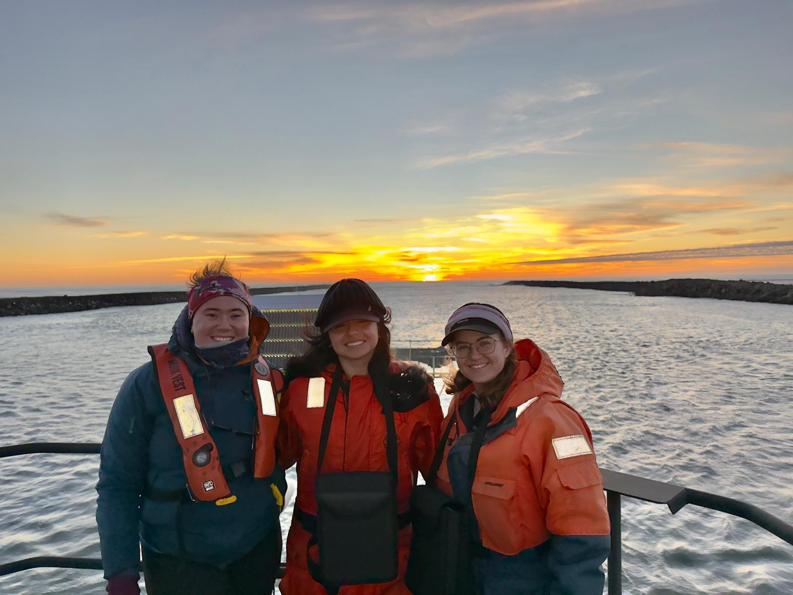

Spring 2025
From the Chapter Leaders
Nat and Connor (nwssmm.leaders@gmail.com)
Hi NWSSMMers!
Welcome to all our new members—we’re thrilled to have you join our community and can’t wait to meet you at our annual meeting this spring!
A huge thank you to everyone who contributed to the Spring 2025 newsletter (BIG shoutout to the contributions of OSU and UW). You’ve all been up to some incredible work, and we’re excited to share your updates!
We also want to take a moment to acknowledge Liz, who has officially stepped down as a Chapter Leader this winter. Her leadership and dedication will be greatly missed—thank you, Liz!
Now, for some exciting news—our 2025 Spring Annual Meeting is set for May 3rd, 8 AM – 6 PM at Western Washington University! This year, we’re aiming to host three fantastic speakers: Dr. Erin D’Agnese, founder of Wild EcoHealth, will discuss molecular tool advancements in wildlife and ecosystem health. Cindy Elliser, founder and research director at Pacific Mammal Research, will share insights on harbor porpoises and harbor seals, as well as the nonprofit’s public outreach efforts. Jon Scordino (tentatively), marine mammal biologist for the Makah Tribe, is a potential third speaker!
We’ll be sharing more details soon on abstract submissions and registration. In the meantime, don’t forget that NWSSMM merch is available at cost through our Bonfire shop: https://www.bonfire.com/store/nwssmm-merch/. If this format doesn’t work for you, please let us know—we want to ensure our merch is accessible to everyone.
After making it through a winter of coursework, data analysis, and far too many hours indoors, we’re excited to welcome longer days, field season adventures, and maybe even a little sunshine. As things ramp up, please don’t forget to share your defense links so we can login and cheer you on!
Now, grab a fresh cup of coffee and enjoy the newsletter.
Nat and Connor Your NWSSMM Leaders
Research Update
HALO: Holistic Assessment of Living Marine Resources Off Oregon
Natalie Chazal (chazaln@oregonstate.edu)
While we wait for the gray whales to come back to Oregon, I got the chance to be an MMO for the HALO project in the GEMM Lab! We went out to along the NH line to NH 65 and saw Dall’s Porpoises, sperm whales, fin whales, and gray whales on our survey! Usually this project also involves retrieving and deploying Rockhopper passive acoustic monitors but this survey was scheduled in between deployments and retrievals so it was a smooth out and back cruise! Learn more about the HALO project at the link here: GEMM Lab HALO Project
Singin’ the Blues (or rather, the Blues are Singin’)
Emma Pearson (emma.pearson@oregonstate.edu)
After several months of wrestling with data collection, formatting, coding issues, and processing challenges (because it’s not science if something doesn’t break), the acoustics team of the Monitoring Offshore Species Assessment to Inform Clean Energy (MOSAIC) project has produced preliminary results of blue whale acoustic presence and species-specific sound propagation along the Oregon Coast! While the emphasis is on preliminary and there is still a lot of work to be done, it’s neat to hear when and where blue whales are singing in the Northeast Pacific. These data will now be used to create species density maps to better understand population sizes along the coast with the goal of informing policy and, eventually, renewable energy development.
Dissections nearly complete!
Connor Whalen (cjwhalen@uw.edu)
Since the fall of 2023 I and a team of about 20 undergraduates have been dissecting harbor seal and harbor porpoise GI tracts to count all parasites we find. We just last week finished up the majority of our specimens, with only about 6 remaining (and all one-offs like pacific white-sided dolphin and CA sea lion). All told, we have done 46 dissections which yielded almost 15,000 individual parasites – and we are only about 30% through finding parasites! I am super grateful to all my volunteers who continue to make this work possible (Anne, Bri, Charli, Claire, Coral, Erik, Erika, Hannah, Ian, Jasper, Julia, Lexi, Lily, Maddy, Malea, Maya, Mollie, Noah, Passion, Sofia, and Steven) and am excited to share results from this project with the NWSSMM community soon!
SMM24
Kristina Randrup (krandrup@uw.edu)
This past fall, I was lucky enough to attend SMM’s biannual conference in Perth, Australia. This was my first real conference, as a graduate student or otherwise. As a lab group, we first traveled south of Perth to Geographe Bay to catch the tail end of the pygmy blue whale migration. This was my first time seeing blue whales and I don’t know how many other opportunities I will get to see them. We returned to Perth to attend an all day blue whale workshop before the conference officially kicked off. It was, albeit, a long day, but it was such a special day to communicate our work with each other, dedicate time to sharing ideas, and make connections to others doing similar work. One of the main conclusions of the blue whale workshop was that we need to better understand the spatial relationship between krill and blue whales; I am exploring this topic as one of my PhD chapters and I certainly did not expect it to be one of the major players of the workshop. Knowing the experts in the field are particularly interested in the ideas I am studying only makes me more excited to further this path. During the conference week itself, I enjoyed attending sessions completely independent of the type of work I am doing. Branching out of the blue whale bubble I tend to stay in was refreshing and a wonderful reminder of how broad this field is. Although I have been in the marine mammal world for a year and a half, I still feel like an outsider. I met so many people that I will collaborate with or people whose papers I have read and felt welcomed with open arms, particularly by all my other blue whale folks. I expected to learn a lot at SMM24 in regard to research, but I didn’t expect to leave feeling as inspired and motivated as I did. I’m so looking forward to the next one and getting to share new chapters of my research there.
Fieldwork Update
A Successful 2025 Field Season for the SAPPHIRE Project in New Zealand
Nicole Principe (nicole.principe@oregonstate.edu)
The SAPPHIRE (Synthesis of Acoustics, Physiology, Prey, and Habitat in a Rapidly changing Environment) Team with OSU’s GEMM Lab just returned from a very successful field season studying environmental change on krill and blue whales in the South Taranaki Bight (STB), Aotearoa, New Zealand. The team spent 3 weeks surveying the waters of the STB searching for blue whales and ended up observing 66 individuals, most of which were lunge feeding at the surface on dense patches of krill. The team was able to collect photos for photo-ID, conduct drone flights for body condition monitoring, and even collect some biopsy samples for genetic and hormone analysis. The prey field was mapped using an echosounder and some krill were able to be collected for nutritional analyses. In addition, CTD drops were conducted across survey effort to better understand the oceanographic characteristics of the STB. This field season was in stark contrast to last year, where there was little krill and few blue whales. Studying changing environmental conditions over multiple years is critical as we study the impacts of climate change on krill and blue whales through this project. The 2025 field team was made up of Leigh Torres, Dawn Barlow, KC Bierlich, Kim Bernard (Oregon State University), Mike Ogle, and Ros Cole (Department of Conservation), and the outstanding crew of the R/V Star Keys (Western Work Boats)- Josh Fowden, Dave Futter, and Jordy Maiden-Drum.
Publication
Krill swarm biomass, energetic density, and species composition drive humpback whale distribution in the Northern California Current
Rachel Kaplan (kaplarac@oregonstate.edu)
Prey abundance and quality are dynamic in time and space, impacting predator ecology. We examine variation in species-specific krill quantity and quality as prey for humpback whales in the Northern California Current region, using generalized additive models to assess metrics including biomass and energy density derived from an integrated dataset of concurrent active acoustics, net tows, and marine mammal observations (2018–2022). Overall, prey metrics were positively correlated with humpback whale presence, with increasing trends modified by seasonal (early versus late foraging season) and spatial (continental shelf versus offshore) variation (model deviance explained 36.3%–40.8%). Biomass and energy density had strong positive effects on humpback whale presence, suggesting whales target high-quality swarms that offer more energy per lunge. Elevated Thysanoessa spinifera abundance near humpback whales suggests that they target this species, particularly in the late season when they are energetically richer than Euphausia pacifica, the region’s other abundant krill species. Environmental change may decrease krill abundance and quality, impacting humpback whales’ ability to meet energetic requirements and potentially driving changes in their distributions and exposure to anthropogenic threats. Clarifying drivers of humpback whale krill patch selection can improve species distribution models and aid managers in mitigating risk to whales.
Publication available at this link: https://academic.oup.com/icesjms/article/82/1/fsaf005/7990502
Measuring polar bear health using allostatic load
Sarah Teman (steman@uw.edu)
The southern Beaufort Sea polar bear sub-population (Ursus maritimus) has been adversely affected by climate change and loss of sea ice habitat. Even though the sub-population is likely decreasing, it remains difficult to link individual polar bear health and physiological change to sub-population effects. We developed an index of allostatic load, which represents potential physiological dysregulation. The allostatic load index included blood- and hair-based analytes measured in physically captured southern Beaufort bears in spring. We examined allostatic load in relation to bear body condition, age, terrestrial habitat use and, over time, for bear demographic groups. Overall, allostatic load had no relationship with body condition. However, allostatic load was higher in adult females without cubs that used terrestrial habitats the prior year, indicating potential physiological dysregulation with land use. Allostatic load declined with age in adult females without cubs. Sub-adult males demonstrated decreased allostatic load over time. Our study is one of the first attempts to develop a health scoring system for free-ranging polar bears, and our findings highlight the complexity of using allostatic load as an index of health in a wild species. Establishing links between individual bear health and population dynamics is important for advancing conservation efforts.
Publication available at this link: https://academic.oup.com/conphys/article/13/1/coaf013/8058654?utm_source=advanceaccess&utm_campaign=conphys&utm_medium=email
High historical movement rates of Antarctic blue whales on Southern Ocean feeding grounds estimated from Discovery mark data
Zoe Rand (zrand@uw.edu)
Little is known about Antarctic blue whale (Balaenoptera musculus intermedia) movement and migration. In many baleen whales, distinct populations arose due to inherited fidelity to migration routes between breeding and feeding areas. To assess whether population struc- ture is present in the form of feeding area fidelity in Antarctic blue whales, we analyzed historical Discovery mark–recovery data with a multistate model to estimate historical interyear movement rates among the 3 ocean basins in the Southern Ocean (Atlantic, Indian, and Pacific) during 1926– 1963. We found high probabilities of interyear movement in almost all directions: for blue whales in the Atlantic basin of the Southern Ocean, we estimated that each year 15% (95% interval: 0.66– 46%) moved to the Indian and 29% (4–49%) to the Pacific basins; from the Indian basin, 13% (3– 33%) moved to the Atlantic and 32 % (14–48 %) to the Pacific basins; and from the Pacific basin, 28 % (13–46%) moved to the Indian and 8% (0.9–24%) to the Atlantic basins. These high estimated movement rates provide little evidence for population structure arising from basin-specific feeding ground fidelity by Antarctic blue whales.
Publication available at this link: https://doi.org/10.3354/esr01361
Spatial and seasonal foraging patterns drive diet differences among north Pacific resident killer whale populations
Amy Van Cise (avancise@uw.edu)
Highly social top marine predators, including many cetaceans, exhibit culturally learned ecological behaviours such as diet preference and foraging strategy that can affect their resilience to competition or anthropogenic impacts. When these species are also endangered, conservation efforts require management strategies based on a comprehensive understanding of the variability in these behaviours. In the northeast Pacific Ocean, three partially sympatric populations of resident killer whales occupy coastal ecosystems from California to Alaska. One population (southern resident killer whales) is endangered, while another (southern Alaska resident killer whales) has exhibited positive abundance trends for the last several decades. Using 185 faecal samples collected from both populations between 2011 and 2021, we compare variability in diet preference to provide insight into differences in foraging patterns that may be linked with the relative success and decline of these populations. We find broad similarities in the diet of the two populations, with differences arising from spatiotemporal and social variability in resource use patterns, especially in the timing of shifts between target prey species. The results described here highlight the importance of comprehensive longitudinal monitoring of foraging ecology to inform management strategies for endangered, highly social top marine predators.
Publication available at this link: https://royalsocietypublishing.org/doi/10.1098/rsos.240445
Photo

Natalie Chazal (chazaln@oregonstate.edu)
Clara Bird, Celest Sorrentino, Natalie Chazal, and Craig Hayslip (not photographed) in the crows nest of the Pacific Storm after a successful day of cetacean surveying!

Kristina Randrup (krandrup@uw.edu)
Sharing the outline for my second chapter at SMM24!